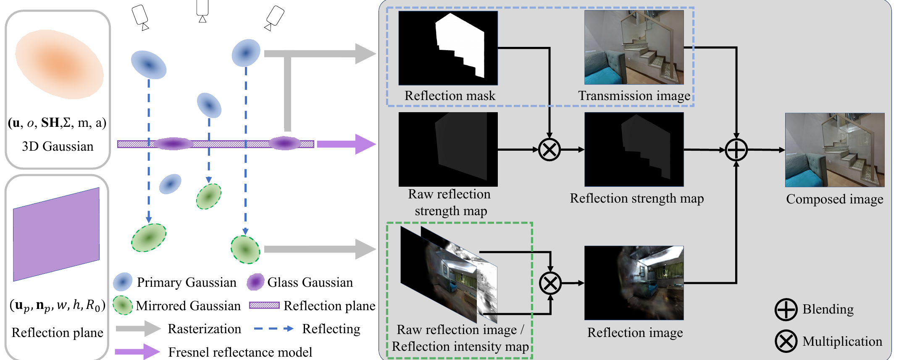

TR-Gaussians: High-fidelity Real-time Rendering of Planar Transmission and Reflection with 3D Gaussian Splatting
High-fidelity, real-time novel-view synthesis for indoor scenes with transparent glass panes.
State Key Lab of CAD & CG, Zhejiang University
Abstract
We propose Transmission-Reflection Gaussians (TR-Gaussians), a novel 3D-Gaussian-based representation for high-fidelity rendering of planar transmission and reflection, which are ubiquitous in indoor scenes. Our method combines 3D Gaussians with learnable reflection planes that explicitly model glass panes with view-dependent reflectance strengths. Real scenes and transmission components are modeled by 3D Gaussians, while reflection components are modeled by mirrored Gaussians with respect to the reflection plane. The components are blended with a Fresnel-based, view-dependent weighting scheme, enabling faithful synthesis of complex appearance effects under varying viewpoints. To effectively optimize TR-Gaussians, we develop a multi-stage optimization framework with color and geometry constraints and an opacity perturbation mechanism. Experiments demonstrate high-fidelity real-time novel-view synthesis and improvements over prior work in scenes with planar transmission and reflection.
Method
TR-Gaussians represent the scene with primary Gaussians, a learnable reflection plane, and glass Gaussians that identify reflective regions. A Fresnel reflectance model produces a view-dependent reflection-strength map, while reflected primary Gaussians render the reflected content. Blending the transmission and reflection images yields the final view.

Qualitative Results
Drag any vertical divider to allocate more of the view to a method. Each comparison uses the same test view for all methods.
Supplementary Video
BibTeX
@article{Liu2026TRGaussians,
title = {TR-Gaussians: High-Fidelity Real-Time Rendering of Planar Transmission and Reflection With 3D Gaussian Splatting},
author = {Liu, Yong and Ye, Keyang and Shao, Tianjia and Zhou, Kun},
journal = {IEEE Transactions on Visualization and Computer Graphics},
volume = {32},
number = {7},
pages = {5882--5894},
year = {2026},
doi = {10.1109/TVCG.2026.3675416}
}